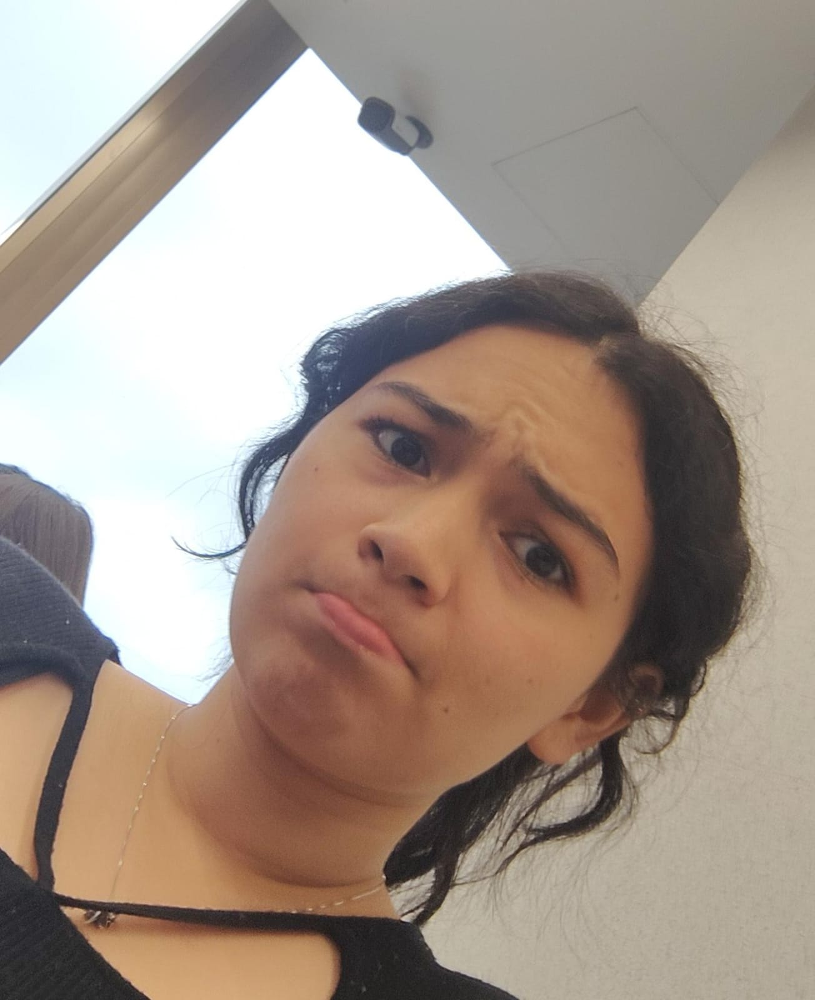
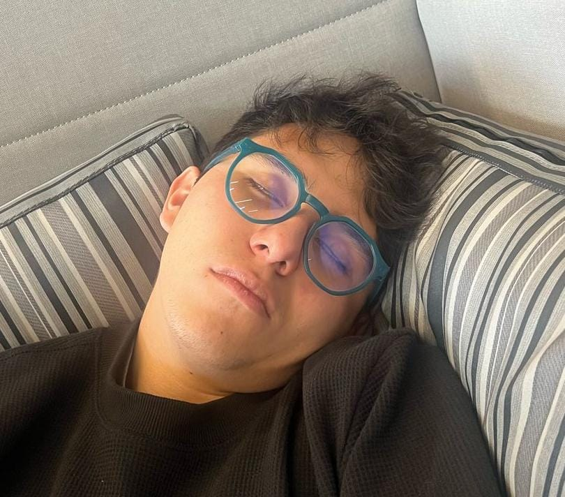
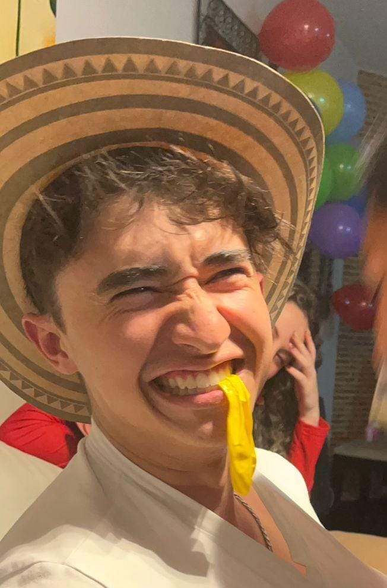
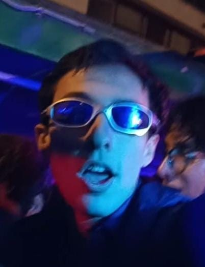

¿Quiénes somos?
No somos tu típico equipo de desarrollo aburrido. Somos un grupo de exploradores digitales, alquimistas de código y soñadores de píxeles. Nuestra misión: conquistar la web, luchar contra los bugs y beber cantidades industriales de café en el proceso. ¡Bienvenidos a nuestra base de operaciones! 🚀
Los Protagonistas
Sebastián
Architect of Chaos (Lead Dev)
Puede compilar código con la mente. Dice que documenta el código, pero todos sabemos que es mentira.

Vanessa
Pixel Enchantress (UI/UX)
Hace que las cosas se vean bonitas. No le gusta nada. Es lesbiana

Santiago
Server Tamer (DevOps)
Habla con los servidores. A veces los servidores le responden. Le tiene miedo a la luz del sol.
Angy
Bug Hunter (QA & Dev)
Encuentra fallos antes de que existan. Su pasatiempo es romper y pedir ayuda.

Ivan
Security Ninja (SecOps)
Entra en el sistema sin dejar rastro. Proteje menos que la defensa del Real Madrid.

Tomas
Cloud Wizard (Cloud Arch)
Vive en la nube, literalmente. Cree firmemente que todo se soluciona reiniciando el contenedor. Viaja mas que Rastacuando